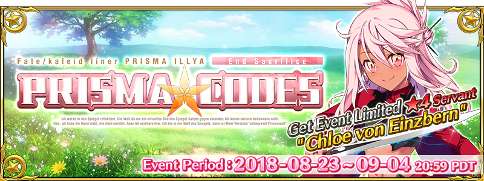
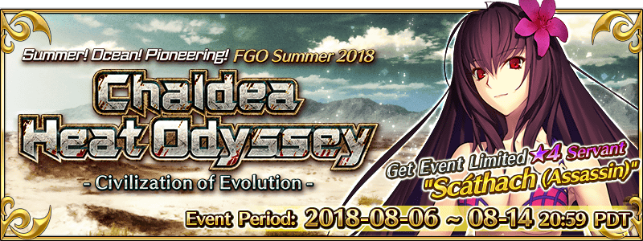

Table of Contents
- CHRISTMAS 2018
- CHRISTMAS 2017 RE
- HALLOWEEN 2018
- HALLOWEEN 2017 RE
- NEROFEST 2018
- PRISMA CODES 2018
- SUMMER 2018 (PART 2)
- SUMMER 2018 (PART 1)
- ONIGASHIMA 2018
- COMING TO THE WEST 2018
- RASHOMON 2018
- FATE/ACCEL ZERO ORDER 2018
- DA VINCI 2018
- KARA NO KYOUKAI 2018
- VALENTINE'S 2018
- SABER WARS 2018
Stack Drops: In the log-event_20XX.js, I log each treasure box as a unit, noting how large the stack was WITHOUT bonus items from craft essences. Total drops for each item without CEs are listed below; for the number of treasure chests dropped that spawned them, see the raw data.
Events are most recent first.
For Hunting Quests + Events that have limited nodes without event items: Hunting Quests.
CHRISTMAS 2018 [2017 11 26 - 2017 12 05]
For the Reddit Post holding information on the spreadsheet: r/GrandOrder
For the spreadsheet: Christmas Event 2018 Free Quests
CHRISTMAS 2017 RE [2017 11 13 - 2017 11 20]
For the Reddit Post holding information on the spreadsheet: r/GrandOrder
For the spreadsheet: Christmas Event 2017 Rerun Free Quests
NOTE: No logging is done for re-runs.
HALLOWEEN 2018 [2018 10 25 - 2018 11 08]
For the Reddit Post holding information on the spreadsheet: r/GrandOrder
For the spreadsheet: Halloween 2018 Free Quests
NOTE: Due to enemy spawns being manipulatable via CEs, logging will be only be done at MAX CE BONUS. In addition, only the highest difficulty quests will be logged as every other quest is only run once (or twice, in rare occasions).
HALLOWEEN 2017 RE [2018 10 04 - 2018 10 17]
NOTE: No logging is done for re-runs.
NEROFEST 2018 [2018 09 12 - 2018 09 25]
For the Reddit Post holding information on the spreadsheet: r/GrandOrder
For the spreadsheet: Nero Fest 2018 Free Quests
NOTE: No logging will be done for this event.
PRISMA CODES 2018 [2018 08 23 - 2018 09 04]
For the Reddit Post holding information on the spreadsheet: r/GrandOrder
For the spreadsheet: Prisma Codes 2018 Free Quests
NOTE: Only B, A, and EX ranked quests are logged in the spreadsheet; all others have been marked as logged with NL for date and column.
NOTE: Due to the sheer number of item drops, all monument drops have been consolidated into MONU_XXX similar to the Da Vinci event. Since each node has exactly one servant, the type of monument naturally corresponds to the class of the servant for the node.
SUMMER 2018 (PART 2) [2018 08 06 - 2018 08 14]
For the Reddit Post holding information on the spreadsheet: r/GrandOrder (Part 2)
For the spreadsheet: Summer 2018 Free Quests (Part 2)
NOTE: Due to Summer Part 1 results, I will not be logging NIAE (Novice, Intermediate, Advanced, Expert) at all since they will inevitably only be run once. This mirrors the spreadsheet.
SUMMER 2018 (PART 1) [2018 07 26 - 2018 08 14]
For the Reddit Post holding information on the spreadsheet: r/GrandOrder (Part 1)
For the spreadsheet: Summer 2018 Free Quests (Part 1)
NOTE: Novice and Intermediate quests are not tracked on the spreadsheet. These have been marked as logged with NL for date and column, similar to Accel Zero.
NOTE: For readability, NIAE are in a separate table from Thunder and Storm, as the former are typically only run once during this event.
ONIGASHIMA 2018 [2018 06 14 - 2018 06 27]
For the Reddit Post holding information on the spreadsheet: r/GrandOrder
For the spreadsheet: Spreadsheet (view only) Onigashima 2018 Free Quests
NOTE: No logging will be done for this event.
COMING TO THE WEST 2018 [2018 05 31 - 2018 06 13]
For the Reddit Post holding information on the spreadsheet: r/GrandOrder
For the spreadsheet: Spreadsheet (view only) Coming to the West 2018 Free Quests
NOTE: No logging will be done for this event.
RASHOMON 2018 [2018 05 16 - 2018 05 30]
For the Reddit Post holding information on the spreadsheet: TBA
For the spreadsheet: TBA
NOTE: No logging will be done for this event.
FATE/ACCEL ZERO ORDER 2018 [2018 04 19 - 2018 05 10]
For the Reddit Post holding information on the spreadsheet: r/GrandOrder
For the spreadsheet: Spreadsheet (view only) Fate/Accel Zero Order 2018 Free Quests
NOTE: Only A and EX Rank Quests were tracked by spreadsheet; all others have been marked as logged with NL for date and column.
NOTE: For readability, Ranks D, C, and B are in a separate table from Ranks A and EX.
DA VINCI 2018 [2018 04 04 - 2018 04 13]
For the Reddit Post holding information on the spreadsheet: r/GrandOrder
For the spreadsheet: Spreadsheet (view only) Da Vinci 2018 Free Quests
NOTE: Due to enemy spawn ratio being manipulatable via CEs (resulting in different servants), pieces are logged under the ANY category. All manuscripts are consolidated under the icon for True manuscripts for visibility.
NOTE: Due to the ALL node (Louvre) dropping Hearts OR Void's Dust depending on Jeanne or Jalter as boss, the drop numbers seen below should not be taken at face value.
NOTE: In the class quests, all monuments dropped correspond to the class of the quest (IE Saber node drops Saber monuments). For brevity, all these monuments are under the MONU_ANY category to avoid taking more columns.
KARA NO KYOUKAI 2018 [2018 02 08 - 2018 02 22]

For the Reddit Post holding information on the spreadsheet: r/GrandOrder
For the spreadsheet: Spreadsheet (view only) Kara no Kyoukai 2018 Free Quests
NOTE: Due to enemy spawns being manipulatable via CEs, no logging will be done for this event.
VALENTINE'S 2018 [2018 01 25 - 2018 02 03]
For the Reddit Post holding information on the spreadsheet: r/GrandOrder
For the spreadsheet: Spreadsheet (view only) Valentines 2018 Free Quests
NOTE: Due to rateups and lack of consistency with drops, no logging will be done for this event.
SABER WARS 2018 [2018 01 04 - 2018 01 18]

For the Reddit Post holding information on the spreadsheet: r/GrandOrder
For the spreadsheet: Spreadsheet (view only) Saber Wars 2018 Free Quests
EXP item drops are not logged. Boss of last quest is Ultra Heroine Z.